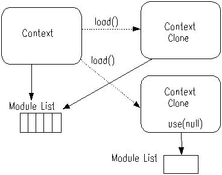

Najprostszym stylem kodu programu jest sekwencja wyrażeń. Kiedy skrypt jest wykonywany wyrażenia są ewaluowane sekwencyjnie a wynik ostatniego wyrażenia jest wynikiem całego skryptu.
wyrażenie 1 wyrażenie 2 ... wyrażenie n
W Pnuts mamy możliwość tworzenia klas Javy bez jawnego kompilowania programu do kodu bajtowego . Skryptowa klasa zwyczajowo powinna być zapisana w pliku o rozszerzeniu '.pnc', który jest kompilowany i ładowany przez specjalizowany loader klas.
class A {
int field_1 = 0
int method (parametr){
...
}
}
Szczegółowy opis definicji klas zawarty jest w sekcji 4.
Wyrażenia to najmniejszy element programu w języku Pnuts. Kiedy wyrażenie jest ewaluowane zwracany jest wynik jako obiekt.
Wyrażenie będące identyfikatorem stanowi referencje zmiennej. Wartość referencji jest przypisana do danego identyfikatora. Zmienne nie posiadają zdefiniowanego typu danych (klasa Object jest typem zmiennych).Zmienna powoływana jest do życia w momencie pierwszego przypisania wartości do identyfikatora w danej przestrzeni nazw.
year = 2002
Funkcje identyfikowane są po nazwie, liście parametrów oraz sekwencji wyrażeń.Funkcje same w sobie są obiektami do których możemy tworzyć referencje czyli przypisywać do zmiennych.
function double(n) {
n * 2
}
Funkcje są identyfikowane po nazwie i liście parametrów formalnych. Grupa funkcji o identycznej nazwie stanowi jedną instancję identyfikowaną po nazwie. Kiedy wywoływana jest funkcja grupa jest odpytywana czy istnieje wersja odpowiednia dla podanych parametrów i gdy zostanie znaleziona jest wykonywana.
Funkcje mogą być zagnieżdżone i mogą posiadać kontekst statyczny.
function f(){
x = 0
function set(value) x = value
function get() x
::set = set
::get = get
}
f()
set(100)
get() ---> 100
f()
get() ---> 0
function inc(x) ++x
function abs(x) if (x < 0) -x else x
function compose (f1, f2) return (function (x) f1(f2(x)))
compose(inc, abs)(-100) ---> 101
compose(abs, inc)(-100) ---> 99
Pakiety stanowią przestrzeń nazw dla zmiennych i funkcji. Każda zmienna i funkcja jest przypisana do jakiegoś pakietu. Zawsze istnieje pakiet nazywany "pakietem bieżącym".
Funkcje są wykonywane w pakiecie w którym zostały zdefiniowane.
Pakiety mogą posiadać pakiet nadrzędny. Gdy następuje odwołanie do zmiennej interpreter zwraca jej wartość a jak nie znajdzie stara sie przeszukiwać pakiety nadrzędne.
Przypisania działają tylko w zakresie pakietu nie odwołując sie do pakietów nadrzędnych (przypisanie zawsze tworzy/zmienia zmienna w pakiecie względem którego nastąpiło przypisanie).
Pakiet nie posiadający rodzica nazywany jest pakietem "głównym" (root package). Domyślny pakiet główny jest nazywany pakietem globalnym (gloabl package).
Funkcja package(name) tworzy pakiet którego rodzicem jest pakiet globalny, jedyny wyjątek stanowi pakiet globalny który nie posiada rodzica. Kiedy parametrem funkcji package() jest napis podzielony separatorem "::" odpowiednia hierarchia pakietów zostaje utworzona.
Moduł jest zbiorem skryptów wielokrotnego użytku który można wczytać za pomocą wbudowanej funkcji use() . Użytkownik może wybrać potrzebne moduły w czasie wykonania a same moduły zapobiegają konfliktom nazw zdefiniowanych w skryptach nazw .
Każdy moduł zazwyczaj jest pakowany w pliku JAR który może zostać dodany do ścieżki poszukiwań CLASSPATH lub zostać skopiowany do katalogu ${PNUTS_HOME}/modules/.
Moduł jest implementowany jako rozszerzenie pakietu. Zależność modułu i pakietu polega na tym że eksportowane nazwy z modułu są widoczne w pakiecie o danej nazwie.
Dlaczego więc moduły są użyteczne? . Aby dowołać się do elementu w pakiecie po nazwie należy ustawić ten pakiet jako bieżący. Nie jest praktyczne ciągłe zmienianie bieżącego pakietu aby odwołać się do zmiennej czy funkcji z danego pakietu.
Odwołania do nazw w modułach mogą być poprzedzone nazwą modułu a co za tym idzie nie ma znaczenia jaki pakiet jest bieżącym.
Inicjalizacja skryptów
Kiedy wywołane zostaje use() odpowiedni skrypt inicjalizacyjny pakietu jest wczytywany. Funkcje modułu muszą być zdefiniowane w czasie gdy następuje inicjalizacja.
Nazwa skryptu inicjalizacyjnego jest tworzona przez zamianie "::" ai "." na "/". Przykładowo gdy nazwa pakietu to "a.b.c", ładowany jest skrypt "a/b/c/init".
Które nazwy są eksportowane
Domyślnie wszystkie nazwane funkcje są automatycznie eksportowane.
Korzystając z Pnuts API autor modułu może zdecydować które nazwy będą eksportowane.
Konflikty nazwKiedy jest rejestrowana nazwa z więcej niż jednego modułu aktualna jest referencja do ostatniej wartości.
Moduły i kontekstyKontekst może zarządzać listą zarejestrowanych modułów.
Lista modułów jest współdzielona przez klony kontekstu, skrypty ładowane przez funkcje load() posiadają tą samą listę modułów co wywołujący. Moduły w ramach kontekstu widzą tą samą listę modułów.
Kiedy wiele modułów definiuje funkcje o takich samych nazwach widziana jest funkcja zarejestrowana przez ostatni moduł a reszta zostaje przesłonięta. Często jest to niepożądany efekt jednak zawsze możemy odwołać się do funkcji z danego modułu poprzedzając jej nazwę nazwą modułu.
Aby zapobiegać temu problemowi zalecane jest resetowanie listy modułów przed użyciem nowego modułu gdy poprzednie nie są nam potrzebne za pomocą funkcji use(null), a sam moduł może sam wczytać potrzebne mu moduły do pracy.
Kiedy tworzona jest lista modułów jest tworzona dodawane moduły są rejestrowane do nowej listy modułów w kontekście (nie są dodawane do oryginalnej listy modułów).
Dla przykładu: jeżeli moduł A używa modułu B przed użyciem modułu C wtedy kontekst modułu używającego modułu A może używać również modułu B. Po zresetowaniu listy modułów informacja o module B jest tracona i po instrukcji use(null) ... use(C) moduł B przestaje być widoczny i użytkownik modułu A widzi jedynie moduł C. Może być to użyteczne gdy moduł wewnętrznie potrzebuje użyć jakiegoś modułu a nie chcemy aby był widoczny dla wywołującego.
use(B)
use(null)
use(C)
Moduły i wywoływanie funkcji
Funkcja jest wykonywana z modułu w który był w użyciu kiedy funkcja była określana .
Załóżmy że następujące dwa skrypty są wczytane.
use("pnuts.lib")
function mymap() map()
use("functional")
map ---> function map(func, list) // w "functional"
mymap() ---> {} // map() w "pnuts.lib"
Oba moduły "pnuts.lib" and "functional" definiują funkcje map(). Po załadowaniu skryptu drugiego wyeksportowana nazwa map() z moduły "pnuts.lib" przestaje być widoczna i widać jedynie map() z modułu "functional" jednak w module m1 zdefiniowano funkcje mymap() która wywołuje map() z modułu "pnuts.lib". Zamiast tworzenia funkcji mymap() wywołującej map można zdefiniować zmienną mymap() do której przypiszemy map() a następnie ją wyeksportować.
a = 1
function t1(){
a = 0
println(a)
}
t1() // 0
println(a) // 1
Lokalne zmienne deklarowane w wyrażeniach warunkowych są inicjalizowane wartoscia null gdy blok warunkowy nie zostanie wykonany.
function t1(){
if (false){
a = 0
}
println(a)
}
function t2(){
while (false){
a = 0
}
println(a)
}
t1() // null
t2() // null
Jeżeli funkcje są zagnieżdżone można używać zmiennych z funkcji zewnętrznych.
a = 1
function t1(){
a = 0
function t2(){
a = 4
}
t2()
println(a + " should be 4")
}
Zakres zmiennych będącymi licznikami pętli są lokalne dla ciała pętli podobnie jak w języku Java.
function t3 (){
a = 2
for (a : 0..9){
println(a)
}
println(a + " should be 2")
}
Poszukiwanie nazwy w zakresie Globalnym określa kolejność.
Kiedy definiowana jest zmienna w zakresie Globalnym zmienna definiowana jest w bieżącym pakiecie.
Kiedy następuje odwołanie do zmiennej z zakresu globalnego w zakresie lokalnym nie jest zagwarantowane że wartość będzie odczytywana każdorazowo dla każdej referencji .Niektóre implementacje mogę odczytywać wartość z referencji globalnej jednorazowo przy wejściu do zakresu lokalnego, inne implementacje mogą odczytywać wartość przy każdym odwołaniu do zmiennej z zakresu globalnego. Z tego powodu nie jest zalecane pisanie skryptów zależnych od tego zachowania.
Przykładowo: funkcja wywołuje import() lokalnie co może spowodować że nazwa 'HashMap' może nie zostać znaleziona. Taka postać importu nie jest zalecana, importowanie powinno być realizowane podobnie jak w języku Java w zakresie globalnym.
function foo(){
import("java.util.HashMap")
HashMap()
}
| function | if | else | while | do | for | foreach | switch | case | default | break | new | yield | |
| null | try | catch | finally | continue | return | true | false | instanceof | class | import | macro | throw | static |
Znak jest wyrażeniem reprezentowanym przez obiekt klasy java.lang.Character . Zasady użycia są więc takie same jak w języku Java.
'A'
'\'' ---> 'Jako znak można stosować znaki ucieczki definiujące znaki jako kody Unicode.
'\n' ---> LF
'\t' ---> TAB
'\r' ---> CR
'\f' ---> ^L
'\b' ---> ^H
'\\' ---> \
'\0' ---> NUL
'\u0041' ---> 'A'
Sekwencja znaków zamkniętych między podwójnymi cudzysłowami " definiuje literał tekstowy reprezentowany przez obiekt klasy String co oznacza że użycie obiektu jest analogiczne do tego znanego w Javie.
> "foo"Podobnie jak w znakach w napisach można używać kodów Unicode.
"foo"
> "\b"
"^H"
"\u0041B" ---> "AB"
Znaki zawarte miedzy znakami ` (backquote) pozwala na uproszczenie zapisu napisów zawierających znaki specjalne.
`x = "A"` ---> "x = \"A\""
`ABC\` ---> "ABC\\"
Liczby całkowite nie są ograniczone do zakresu typu 'long' . Typ danych zawierający liczby całkowite jest automatycznie dobierany w zależności od wartości. Jeżeli wartość mieści się w zakresie między Integer.MAX_VALUE i Integer.MIN_VALUE typem jest java.lang.Integer. Kiedy wartość mieści się w zakresie Long.MAX_VALUE i Long.MIN_VALUE, typem jest java.lang.Long. W przeciwnym przypadku użyty zostanie obiekt klasy java.math.BigInteger .
W środowisku Personal Java które nie posiada pakietu java.math liczby przekraczające zakres long są reprezentowane przez obiekty klasy Double.
("0" | ["1"-"9"] (["0"-"9"])*)
123
12345678901234567890
123L
"#" (["0"-"9","a"-"f","A"-"F"])+"0" ("X"|"x") (["0"-"9","a"-"f","A"-"F"])+
#ffff
#ffff0000
0xff
Kiedy wartość jest w zakresie Byte.MAX_VALUE i Byte.MIN_VALUE dopuszczalny jest zapis w stylu "#ff" który reprezentuje wartości typu Byte, zapis "0xff" powołuje do życia obiekty typu Integer.
0777
0177L
Liczby rzeczywiste są reprezentowane przez klasy java.lang.Double lub java.lang.Float.
123F ---> new Float(123.0)
123f ---> new Float(123.0)
123D ---> new Double(123.0)
123d ---> new Double(123.0)
123.0 ---> new Double(123.0)
123.0f ---> new Float(123.0)
1.23E-4 ---> new Double(1.23E-4)
1.23E-4f ---> new Float(1.23E-4)
Liczby stałoprzecinkowe reprezentowane są przez obiekty klasy java.math.BigDecimal.
123.0B ---> new BigDecimal("123.0")
123.0E-4B ---> new BigDecimal("0.00123")
1.2 * 3 ---> 3.5999999999999996
1.2B * 3 ---> 3.6
W środowisku Personal Java przyrostek 'B' jest ignorowany przez brak pakietu java.math.
- true
- false
null reprezentuje literał null języka Java
Literał Class reprezentuje klasę języka Java jednak sam w sobie nie posiada wartości. Jest używany w wyrażeniu new oraz jako część składni try/catch/finally statement.
java.util.Integer
Literał typu działa tak jak w języku Java jednak nie posiada wartości. Jest używany w wyrażeniach rzutowania cast expression i instancji instanceof expression. Literał typu może być tablicą typów, typem podstawowym oraz literałem klasowym.
int
int[]
java.util.Integer
Wartość referencji class jest typu java.lang.Class tak jak w Javie,
class java.lang.Object ---> java.lang.Object class
Nazwy klas wewnętrznych są oddzielane znakiem '$' jak w Javie.
class Toplevel$Inner ---> Toplevel.Inner class
Wyrażenie import upraszcza import klas.
W JDK1.1 klasy są ładowane przez klas loadera który ładował same środowisko Pnuts. W J2SE/J2EE używany jest systemowy loader klas chyba ze zostanie ustawiony inny loader przez metodę Context.setClassLoader() wtedy on staje się domyślnym.
Semantyka następujących operatorów jest bazowana na tej z języka Java.
| + | - | * | / | % |
Tabele możliwych konwersji między typami przy zastosowaniu operatorów arytmetycznych.
| BigDecimal | BigInteger | Double | Float | Long | Integer | Character | Short | Byte | |
| BigDecimal | BigDecimal | BigDecimal | BigDecimal | BigDecimal | BigDecimal | BigDecimal | BigDecimal | BigDecimal | BigDecimal |
| BigInteger | BigDecimal | BigInteger | BigDecimal | BigDecimal | BigInteger | BigInteger | BigInteger | BigInteger | BigInteger |
| Double | BigDecimal | BigDecimal | Double | Double | Double | Double | Double | Double | Double |
| Float | BigDecimal | BigDecimal | Double | Float | Float | Float | Float | Float | Float |
| Long | BigDecimal | BigInteger | Double | Float | Long | Long | Long | Long | Long |
| Integer | BigDecimal | BigInteger | Double | Float | Long | Integer | Integer | Integer | Integer |
| Character | BigDecimal | BigInteger | Double | Float | Long | Integer | Integer | Integer | Integer |
| Short | BigDecimal | BigInteger | Double | Float | Long | Integer | Integer | Integer | Integer |
| Byte | BigDecimal | BigInteger | Double | Float | Long | Integer | Integer | Integer | Integer |
a = 0
++a ---> 1
a ---> 1
a = 0
a++ ---> 0
a ---> 1
a = a++
a ---> 1
| == | != | < | <= | > | >= |
Jeżeli oba parametry są obiektami klasy Number następują porównanie numeryczne.
1 == 1.0 ---> true
Jeżeli jeden z parametrów jest klasy Numeric a drugi jest klasy Number lub Numeric porównanie następuję za pomocą metody Numeric.compareTo().
Jeżeli oba porównywane obiekty są klasy String wynikiem porównania jest wynik metody String.compareTo().
"A" < "AB" ---> true
Jeżeli oba parametry są tablicami następuję porównanie wszystkich elementów tablic na odpowiadających sobie indeksach za pomocą metody Object.equals(Object). Tablice różnych długości są zawsze różne a jedynie dopuszczalnymi operatorami są == i !=.
[1,[2,3]] == [1,[2,3]] ---> true
[1,2,3] == [1,2] ---> false
Jeżeli jeden z parametrów jest obiektem implementującym interfejs java.lang.Comparable metoda Comparable.compareTo() tego obiektu jest użyta do porównania.
W przeciwnym przypadku porównanie oparte jest na metodzie Object.equals() i w tym przypadku jedynie dopuszcza się operatory == i !=.
1 == 1 ---> true
Object() == Object() ---> false
| && | || | ! |
!(1 == 2) ---> true
1 == 1 && 2 == 2 ---> true
1 == 1 || 1 == 2 ---> true
Jeżeli operandy nie są wartościami logicznymi są one konwertowane do wartości logicznych wg zasady konwersji.
| & | | | ~ | ^ | >> | << | <<< |
1 << 100 ---> 1267650600228229401496703205376
pnuts_version.startsWith("1.1") ? 1 : 0
Jeżeli wartość warunku nie jest wartością logiczną jest ona konwertowana za pomocą zasad zasady konwersji.
| *= | /= | += | -= | %= | &= |
| |= | ~= | ^= | >>= | <<= | <<<= |
Te operatory mają zastosowanie dla obiektów pochodnych od Number .
Jest odpowiednikiem pseudo kodu.
identyfikator1 = try {wyrażenie[0]} catch (IndexOutOfBoundsException e){}
identyfikator2 = try {wyrażenie[1]} catch (IndexOutOfBoundsException e){}
...
[1, 2, 3]
{"one", 1, '\u3042', null}
{1, {2, {"yes", "no"}, null}} ---> new Object[]{
new Integer(1),
new Object[]{
new Integer(2),
new Object[]{
"yes",
"no"
},
null
}
}
type1 = class java.lang.Object[] ---> java.lang.Object[] class
type2 = int[][] ---> int[][] type
type = class java.lang.Object
array1 = type[1] ---> [null] // new Object[1]
array2 = int[3][2] ---> [[0, 0], [0, 0], [0, 0]]
array3 = new int[3][2] // jak wyżej
[1, 2, 3].length ---> 3
{1, 2, 3}
a = [1, 2, 3]
a[0] ---> 1
a[0] = 10
a[0] ---> 10
Elementy tablic są modyfikowalne.
a = [1, 2, 3]
a[0] = 100
a ---> [100, 2, 3]
Jeżeli index jest wartością ujemną idx a długością tablicy jest len, wtedy zapis a[idx] jest interpretowany jako a[idx + len].
(osoby znające np. język Python znają od dawna taka formę indeksowania list która jest bardzo wygodna, gdyż zamiast pisać a[a.length-1] można zapisać a[-1])
a = [1, 2, 3]
a[-1] => 3
a[-2] => 2
a[-3] => 1
a[-4] => error
Na platformie Java2 tablice mogą być również obiektami klasy java.util.List.
Operacja ta zwraca wycinek tablicy od indeksu indeks_startowy do indeks_końcowy jako nowa tablice, gdy indeks_końcowy nie jest podany indeks_końcowy=tablica.length-1. Jeżeli w podanym przedziale nie ma elementów zwracana jest pusta tablica. (znowu osoby znające język Python poczują sie jak w domu:))
foo = [1, 2, 3]
foo[1..] ---> [2, 3]
foo[1, 1] ---> [2]
Na platformie Java2 tablice mogą być również obiektami klasy java.util.List.
Jeżeli target jest tablica, kolekcją lub generatorem a predicate jest funkcją z jednym parametrem wyrażenie zwraca generator zwracający jedynie elementy spełniające warunek predicate.
x = list([1,2,3])
for (i : x[function (x) x % 2 == 0]) {
println(i)
}
Kiedy expression jest wyrażeniem logicznym to jest ono konwertowane do funkcji jednoparametrowej która działa jak predicate(elem). Jeżeli expression jest porównaniem (lval compare_op rval) identyfikator z lewej strony (lval) jest interpretowany jako nazwa pola.
x = list()
import java.awt.Button
for (i : 1..10) x.add(Button())
x[name == "button0"]
--->
x[function (i) {i.name == "button0"}]
x[name == "button0" || name == "button1"]
--->
x[function (i) {i.name == "button0" || i.name == "button1"}]
Jeżeli expression jest operatorem logicznym ( ! val ) identyfikator val jest interpretowany jako nazwa pola z target.
x[!visible]
--->
x[function (i) {!i.visible}]
foo = "123"
foo[1..] ---> foo.substring(1) ---> "23"
foo[1..1] ---> foo.sunstring(1, 2) ---> "2"
Ta operacja wyciąga znak z napisu o podanym indeksie.
foo = "123"
foo[1] ---> foo.charAt(1) ---> '2'
Kiedy jedno lub więcej wyrażeń mapujących zastanie użyte tworzony jest obiekt java.util.HashMap zawierający podane mapowania.
{ "name"=>"Sae", "age" => 1 }
Na platformie Java2 odwołanie do elementów mapy może wyglądać jak odwołanie do tablicy gdzie indeksem jest klucz mapy w cudzysłowach.
foo = map()
foo["age"] = 24
foo["age"] ---> 24
Ta operacja łączy dwa obiekty.
[1, 2, 3] + [4, 5, 6] ---> [1, 2, 3, 4, 5, 6]
Wynikowy obiekt jest takiego samego typu jak pierwszy obiekt z czego wynika że wszystkie elementy drugiego obiektu muszą takie samego typu jak pierwszego.
int[0] + [1, 2, 3] ---> [1, 2, 3]
Uwaga: jeżeli kolekcja1 i kolekcja2 są obiektami typu Set wynikiem będzie połączenie (UNION) tych obiektów.
{1=>2, 2=>3} + {2=>4, 3=>5} --> {1=>2, 2=>4, 3=>5}
foo = "ABC"
bar = "DEF"
foo + bar ---> "ABCDEF"
Zwraca kolekcje lub tablice która zawiera elementy pierwszego obiektu z wyjątkiem tych które są w obiekcie drugim.
Typy elementów obu obiektów muszą być takie same.
[1,1,1,2] - [1] ---> [2]
[1,1,1,2] - [2] ---> [1,1,1]
[1,1,1,2] - [1,3] ---> [2]
Zwraca część wspólną obu obiektów (jak cześć wspólna zbiorów w matematyce).
set([1,2]) * set([1,3]) ---> [1]
new java.awt.Point(10, 20)
Point = class java.awt.Point
Point(10, 20)
import java.awt.Point
new Point(10, 20)
class Person {
int age; String name
Person(age, name){
this.age=age; this.name=name
}
}
Kiedy jedna lub więcej definicji metod jest zawarta miedzy para nawiasów klamrowych przy wyrażeniu new tworzona jest dynamicznie podklasa oraz jej instancja.
import java.awt.event.*
new WindowAdapter(){
windowClosing(e){
e.source.dispose()
}
}
Jeżeli zostanie użyta specjalna zmienna 'this' przed wywołaniem metody, wywoływana jest metoda na zasadach jak w języku Java.
x = new Object(){
test(){
this.toString()
}
}
x.test()
Jeżeli zostanie użyta specjalna zmienna 'super' przed wywołaniem metody, wywoływana jest metoda na zasadach jak w języku Java.
x = new Object(){
toString(){
"blah " + super.toString()
}
}
x.toString()
Kod w metodzie posiada zakres widzialności na zasadach znanych z funkcji zagnieżdżonych.
function test(n){
x = new Object(){
test(){
println(n)
}
}
x.test()
}
test(100)
btn = java.awt.Button {
labal : "OK"
}
btn = new java.awt.Button()
btn.labal = "OK"
btn
Nowa składnia jest jeszcze eksperymentalna.
Jeżeli specialny operator :: zostanie użyty dowolna właściwość Ziarenka zostanie zmodyfikowana (redefiniowana).
import javax.swing.*
f = JFrame();
f.name = "foo"
btn = JButton {
text :: f.name
}
btn.text --> "foo"
f.name = "bar"
btn.text ---> "bar"
Dodatkowo w przypadku użycia :: przy pojedyńczej właściwości synchronizacja będzie dwu kierunkowa (zmiana wartości jednej właściwości wpływa na wartość drugiej).
btn.text = "zzz"
f.name --> "zzz"
Jest to zaimplementowane przy użyciu mechanizmu Ziarenek (JavaBeans) ProperyChangeListener/ProperyChangeEvent.
Jeżeli obiekt jest instancją klasy typ operator zwraca true.
"hello" instanceof String ---> true
[1] instanceof int[] ---> false
Gdy typ jest typem podstawowym lub typem tablicowym wartością wyrażenia jest wartość skonwertowana do podanego typu.
(int)1.0d
Kiedy wartością wyrażenia jest instancja klasy/typu konwersja nie jest przeprowadzana.
(java.lang.Object)1.0
Gdy wyrażenie nie może być skonwertowane do klasy/typu rzucany jest wyjątek ClassCastException.
(java.util.Vector)1.0
---> java.lang.ClassCastException : (java.util.Vector)1.0
Kiedy wyrażenie jest użyte jako parametr konstruktora, metody, lub metody statycznej wartość zostaje użyta do wyboru odpowiedniej implementacji metody/konstruktora.
String.valueOf((char[])[1,2,3])
byte short char int long float double boolean
Podane zmienne są zdefiniowane jako korespondujące do odpowiednich obiektów Class.
Użycie zdefiniowanej zmiennej jako funkcji powoduje konwersje do określonego typu.
Jeżeli wyrażenie jest napisem zawierającym wartość liczbową funkcja parsuje tekst jako liczbę i ją zwraca. Jeżeli wyrażenie jest klasy Number zostaje skonwertowane do wyspecyfikowanego typu. Jeżeli wyrażenie jest znakiem to int(), byte() i short() zwraca kod znaku.
int(" 1 ") ---> 1
int('1') ---> 49
Jeżeli typ_podstawowy to java.lang.Character i wynik wyrażenia jest w zakresie 0 i 0xffff funkcja zwraca znak o podanym kodzie, w innym przypadku rzucany jest wyjątek.
char(65) ---> 'A'
boolean(true) ---> true
boolean(false) ---> false
boolean(-1) ---> true
boolean(0) ---> false
boolean("non-empty") ---> true
boolean("") ---> false
boolean("false") ---> true
boolean(new Object()) ---> true
boolean(null) ---> false
Jeżeli typ jest jednym z int, byte, short, lub long to baza może wskazywać jaka podstawa liczby ma być użyta przy konwersji.
int("20", 16) --> 32
long("cafebabe", 16) --> 3405691582
Domyślne zachowanie pól klas bazuje na właściwościach Java Beans jednak niektóre obiekty posiadają własne sposoby interpretacji tego zachowania.
import java.awt.Button
btn = Button("hello")
btn.label ---> "hello"
Dostęp do pól może być zmieniony przez API Pnuts, zobacz 'Customizing the Behavior of Java API Access'.
Zwraca wartość pola statycznego, tylko publiczne pola mogą być identyfikatorem.
class java.awt.Color::blue
Wywołuje metodę instancji z podanym parametrem.
"ABC".length() ---> 3
"ABC".getClass() ---> java.lang.String class
Jeżeli wartością wyrażenia jest obiekt Class object i identyfikator nie jest metodą instancji ale statyczną metodą wywoływana jest metoda klasy.
Wywołuje statyczną metodę klasy z podanym parametrem.
class java.lang.System::gc()
Typy podstawowe Javy tj. int, long, etc. są opakowywane jako podklasy Number. Gdy metoda Javy zwraca wartość typu prostego skrypt opakowuje tą wartość w odpowiedni obiekt tj. java.lang.Integer. Jeżeli metoda Javy posiada parametr typu prostego typ obiektowy jest konwertowany automatycznie do typu prostego (od Javy 5 (Tiger) takie zachowanie jest cześcią języka).
str = "ABCDE"
str.charAt(1) ---> 'B'
Typy tablicowe są takie same jak w języku Java. Kiedy parametr metody jest tablicą i wymagana jest konwersja parametru aktualnego tworzona jest nowa odpowiednia tablica a zawartość jest przepisywana z odpowiednią konwersją która następnie jest przekazywana do metody.
array = "Hello".toCharArray() ---> ['H','e','l','l','o']
array.getClass() ---> char[] type
String(['H','e','l','l','o']) ---> "Hello"
foo = [1, 2, 3]
if (foo.length > 5){
1
} else if (foo.length > 4){
2
} else {
3
} ---> 3
value = if (foo.length > 3) 1 else 2
value ---> 2
Jeżeli warunek nie jest wartością logiczną jest on konwertowany za pomocą zasady konwersji.
Dopasowanie jest wykonywana za pomocą metody equals().
"break" bez wyrażenie jest adekwatne do "break null".
while (sum > 0){
sum = sum - 1
}
Jeżeli warunek nie jest wartością logiczną jest on konwertowany za pomocą zasady konwersji.
x = 0
do {
println(x++)
} while (i < 10)
Jeżeli warunek nie jest wartością logiczną jest on konwertowany za pomocą zasady konwersji.
j = 0
for (i : 0..4){
j = j + i
}
for (; j > 0; j--){
println(j)
}
Jeżeli warunek nie jest wartością logiczną jest on konwertowany za pomocą zasady konwersji.
W pierwszej wersji pętli for wyrażenie-blok jest jest wykonywane tyle razy ile wskazują wartości wartośćPoczątkowa i wartośćKońcowa, w każdym przebiegu identyfikator jest zwiększany o jeden.
W drugim typie każdy element wyrażenia jest podstawiany do identyfikatora i dla każdej wartości jest wykonywany wyrażenie-blok. wyrażenie może być jednym z obiektów:
for (i : 1..3) println(i) ---> 123
for (i : 3..1) println(i) ---> 321
for (i : [1, 2, 3]) println(i) ---> 123
Jeżeli dwie lub więcej zmiennych są zdefiniowane to wyrażenie przypomina podany pseudo kod:
for (tmp : wyrażenie) {
identyfikator_1 = try { tmp[0]} catch (IndexOutOfBoundsException e){}
...
identyfikator_N = try { tmp[N-1]} catch (IndexOutOfBoundsException e){}
wyrażenie-blok
}
foreach i (expr) jest synonimem for (i:expr).
sum = 0
foreach i [1, 2, 3] {
sum = sum + i
}
sum ---> 6
sum = 0
vec = class java.util.Vector()
vec.addElement(1)
vec.addElement(2)
vec.addElement(3)
foreach i (vec.elements()) {
sum = sum + i
}
sum ---> 6
for (i : 0..9){
if (i > 2){
continue
}
println(i)
}
Kiedy return zostanie napotkane w funkcji to następuje powrót z funkcji a zwróconą przez funkcje wartością będzie wyrażenie. Kiedy return jest wywołane poza funkcją sesja interpretera zostaje zakończona analogicznie do wywołania quit(expressoin).
"return" bez wyrażenia jest odpowiednikiem "return null".
try {
throw ("blah")
} catch (java.io.IOException e1){
println(1)
} catch (Exception e2){
println(2)
} finally {
println(3)
}
Jeżeli jest podany identyfikator funkcja o podanej nazwie jest tworzona. W tym przypadku funkcja jest identyfikowana po nazwie oraz liscie parametrów formalnych.
Jeżeli nie jest podany identyfikator dla funkcji generowany jest automatycznie unikalny identyfikator.
f = function (e) e.getSource().dispose()
{a,b -> a + b} // odpowiednik funkcji function (a,b) a + b
Jeżeli funkcja posiada jeden lub więcej argumentów i ostatni parametr zakończony jest nawiasami "[]" to funkcja może przyjmować różną ilość parametrów. Formalnie argument zakończony "[]" jest tablicą i odwołanie do parametrów odbywa się na zasadzie pozycyjnej jak w przypadku tablicy
function f(args[]) args
f() ---> []
f(1) ---> [1]
f(1,2,3) ---> [1, 2, 3]
function g(a,b[]) b
g(1) --> []
g(1,2) --> [2]
g(1,2,3) --> [2,3]
W przypadku funkcji o argumentach pozycyjnych nie następuje przeładowanie funkcji a jej redefinicja w przypadku nazwanych funkcji, funkcji anonimowych to nie dotyczy.
function f(args[]) args
..
function f(a,b,c[]) c // f(args[]) nie jest już dostępna
f() --> error
f(1,2) --> []
f(1,2,3) --> [3]
f(1,2,3,4) --> [3,4]
W przypadku dopasowywania funkcji przy wywołaniu znaleziona zostanie funkcja pasująca do ilości argumentów ma ona pierwszeństwo nad funkcja z argumentami pozycyjnymi.
function f(args[]) args
function f(arg) arg
f(1) ---> 1 // f(arg) bierze pierszeństwo
f(1,2,3) ---> [1, 2, 3]
Gdy dana funkcja jest zdefiniowana w wielu postaciach w jednej przestrzeni nazw fizycznie wszystkie te funkcje stanowią jeden obiekt funkcyjny.
function f() 1
function f(a) a
x = f
x() / ---> 1
x(100) / ---> 100
Jeżeli funkcje o tej samej nazwie są zagnieżdżone w przestrzeni lokalnej to funkcja z przestrzeni zewnętrznej jest dostępna w przestrzeni wewnętrznej ale funkcja wewnętrzna nie jest widoczna w przestrzeni zewnętrznej.
function scope1(){
function f() 1
function scope2(){
function f(a) a
f() // --> 1
}
scope2()
f() // --> 1
f(100) // --> błąd
}
function f() 1
function g(){
function f(a) a
f(100) // --> 100
f() // --> 1
}
f() // --> 1
f(100) // --> nie znaleziono
use("pnuts.lib")
function string(a, b){
string(b)
}
function g(){
function string(a, b) string(a) // --> nie ma takiej funkcji: string (1)
string(1, 2)
}
function g(){
string = string
function string(a, b) string(a + b)
string(1, 2)
}
Wywołanie funkcji powoduje wykonanie ciała funkcji gdzie parametry formalne zastępowane są parametrami aktualnymi.
Zmienne i funkcje w pakiecie pakiet mogą być przywoływane "pakiet :: nazwa_zmiennej" jeżeli pakiet jest prawidłowym identyfikatorem Pnuts.
Jeżeli funkcja zawiera jedno lub więcej wyrażeń 'yield' to zwracają one specjalny obiekt nazywany "generator" bez jego wykonywania . Generator może być użyty w pętli for/foreach w celu przetworzenia wartości zwracanych przez generator.
function integerGenerator(min, max){
for (i: min..max) yield i
}
g = integerGenerator(0, 3) ---> generator
for (i : g){
println(i)
}
---> 0
1
2
3
generator sekwencji zwraca obiekt Generator który dostarcza sekwencji liczb w zakresie początkowyIndeks .. końcowyIndeks która jest podzbiorem wartości zwracanych przez inny generator.
function g(n){
for(i:0..n) yield i
}
x = g(100)
for (i: x[90..]) println(i)
Jeżeli podana jest liczba zwracany jest N'ty wygenerowany obiekt. Zwraca null jeżeli generator nie wygenerował N'tego obiektu.
function range(start, end){
for(i:start..end) yield i
}
x = range(1, 100)
x[90] ---> 90
x[200] ---> null
Jeżeli jest zdefiniowana funkcja predicate generator zwraca jedynie te elementy dla których funkcja zwraca true.
function range(start, end){
for(i:start..end) yield i
}
x = range(1, 100)
list(x[function (x) x < 4]) ---> 1,2,3
Kiedy expression jest wyrażeniem logicznym to wyrażenie to jest konwertowane do funkcji przyjmującej jeden argument która działa tak samo jak dla predicate(elem). Jeżeli expression jest porównaniem (lval compare_op rval), lewy identyfikator lval jest interpretowany jako pole instancji. Zobacz 'Wybór Elementów'.
import java.awt.Button
function buttons(n) {for (i : 1..n) yield(Button())}
x = buttons(10)
printAll(x[name == "button0"])
Operacja + dla dwóch generatorów zwraca nowy generator tworzący serie obiektów które zwrócone by były przez oba generatory sekwencyjnie.
x = range(1, 10)
even = x[function (x) x % 2 == 0]
odd = x[function (x) x % 2 != 0]
printAll(even + odd)
Odczyt pola z generatora zwraca nowy generator który zwraca wartości pól z obiektów generowanych przez ten generator. Zobacz również 'Instancja Pola'.
import java.awt.Button
function buttons(n) {for (i : 1..n) yield(Button())}
x = buttons(10)
printAll(x.name)
Zapis pola generatora modyfikuje wszystkie instancje wygenerowane przez generator
import java.awt.Button
buttons = [Button(),Button(),Button()]
function generator(elements) for (i:elements) yield i
generator(buttons).name = "new name"
printAll(generator(buttons).name)
Definicja klasy jest podobna do tej znanej z języka Java.
Poniżej przedstawiono różnicę między klasami Pnuts a klasami Java:
Gramatyka definicji klasy jest następująca:
package util
import java.util.*
import java.io.*
class mymap extends TreeMap implements Serializable {
get(key){
if ((v = super.get(key)) == null){
super.put(key, v = set())
}
v
}
}
Definicje klas mogą być używane jak wyrażenia. Kiedy definicja klasy zostanie użyta jako wyrazenie klasa jest ładowana przez nowo utworzony loader klas .
Dziesięć podstawowych operacji jest jest realizowane przez wbudowane funkcje które nie mogą być przedefiniowanie przez użytkownika.
import package getContext class throw catch finally use unuse load autoload require loadFile eval defined quit
import() rejestruje nazwa_klasy w bieżącym kontekście. Jeżeli następuje odwołanie do niezarejestrowanej nazwy, zmienna jest sprawdzana czy nazwa jest zarejestrowana przez tą funkcje.
nazwa_klasy może zawierać znak "*" np. "java.awt.*".
Domyślnie pakiet "java.lang.*" i domyślny pakiet ("*") są zarejestrowane. Klasy są poszukiwane zaczynając od ostatnio importowanego pakietu. Użycie "*" w imporcie nie powoduje nadpisania nazw zaimportowanych klas.
Object ---> java.lang.Object class
import("org.omg.CORBA.*")
Object ---> org.omg.CORBA.Object interface
import("java.lang.Object")
Object ---> java.lang.Object class
import("org.omg.CORBA.*")
Object ---> java.lang.Object class
Kiedy parametr nazwa_klasy równa się null, wszystkie nazwy klas są niezarejestrowane.
Import static pozwala na dostęp do statycznych pól/metod bez specyfikacji nazwy klasy.import static java.awt.Color.*
blue --> java.awt.Color[r=0,g=0,b=255]
import static java.util.ResourceBundle.*
getBundle("pnuts.lang.pnuts")
Zwraca listę zaimportowanych klas i pakietów.
import() ---> ["java.lang.*", "*"]
import("org.omg.CORBA.Object")
import() ---> [org.omg.CORBA.Object interface, "java.lang.*", "*"]
import(null)
import() ---> []
import() musi być użyty w globalnej przestrzeni nazw.
Wchodzi do podanego pakietu, jeżeli nazwaNapis jest podana a pakiet nie istnieje jest on tworzony. Funkcja zwraca null.
package() ---> package ""
a = 1
package("foo") ---> pakiet "foo"
a ---> 1
a = 2
a ---> 2
::a ---> 1
package("") ---> pakiet ""
a ---> 1
foo::a ---> 2
package() ---> pakiet ""
function f() 1
package("foo") ---> pakiet "foo"
f() ---> 1
function f() 2
f() ---> 2
::f() ---> 1
package("") ---> pakiet ""
f() ---> 1
foo::f() ---> 2
Zwraca bieżący pakiet.
package() ---> pakiet ""
package("foo")
package() ---> pakiet "foo"
package("")
package() ---> pakiet ""
Kiedy moduł jest obiektem String to moduł jest dodawany do bieżącego kontekstu.
Gdy moduł jest prawidłowo użyty funkcje z modułu są domyślnie eksportowane.
use() zwraca true jeżeli moduł został zarejestrowany w kontekście.
Przykładowo,
function x() 100
use("foo") ---> true
x ---> function x() 100
Gdy module jest obiektem Package pakiet jest zaznaczany jako moduł i dodawany do listy modułów kontekstu . Zobacz "Dynamiczne moduły".
Gdy module jest null, wszystkie pakiety są wyrejestrowywane z kontekstu. Zobacz "Lista Modułów".
Gdy module jest pominięty zwracana jest tablica nazw użytych modułów.
use() ---> ["foo"]
Zobacz "Moduły" aby dowiedzieć się o podstawowych koncepcjach i "Podręcznik Pnuts" aby dowiedzieć się więcej o modułach.
unuse() usuwa podany moduł z listy modułów i zwraca true jeżeli moduł został usunięty.
Context jest wewnętrznym obiektem interpretera Pnuts. Zawiera następujące informacje;
Rezultatem getContext() jest obiekt klasy pnuts.lang.Context który jest opisany w Dokumentacji API.
getContext().setOutputStream(System::out)
Zobacz "Podręcznik Pnuts".
loadFile() czyta skrypt z lokalnego systemu plików. load() czyta skrypt znaleziony przez loadera klas. Funkcje zwracają wynik ostatniego wyrażenia w skrypcie.
Kiedy skrypt jest wykonywany importowane klasy są resetowane do stanu domyślnego a bieżący pakiet jest ustawiany na pakiet główny.
loadFile("/home/my.pnut")
load("examples/pnutsLayout.pnut")
require() czyta skrypt który nie został jeszcze wczytany lub został zmieniony.
autoload() rejestruje symbol mapujący skrypt w pakiecie bieżącym. Jeżeli symbol nie jest zdefiniowany w pakiecie zamapowany pakiet jest wczytywany.
Zobacz "Podręcznik Pnuts".
foo = "YES"
eval("foo.length()") ---> 3
Gdy pakiet jest podany to napis jest ewaluowany w nowym kontekście gdzie pakiet staje się pakietem bieżącym.
eval("a = 100", "pkg")
pkg::a ---> 100
Rzuca podany wyjątek lub RuntimeException gdy napis jest podany.
throw("be careful")
throw(FileNotFoundException())
throw new java.io.IOException("message")
Gdy catch() nie jest użyte w bloku try/catch następuje definicja obsługi wyjątku w bieżącej przestrzeni. Kiedy rzucony zostanie wyjątek z zarejestrowanej listy odpowiednia oobsługa jest wykonywana i następuje powrót do wywołującego a funkcja zwraca wynik.
Przestrzeń obsługi wyjątków jest taka sama jak zmiennych.
function func(){
catch(FileNotFoundException, function (e) "Nie ma znaczenia")
println(1)
FileInputStream("plik nie istnieje")
println(2)
}
> func()
1
"Nie ma znaczenia"
> FileInputStream("plik nie istnieje")
java.io.FileNotFoundException : "plik nie istnieje"
Gdy funkcja jest obsługa jest niezdefiniowana
Gdy obie funkcje są podane wykonywana jest funkcja funkcjaTry() następnie wykonywana jest funkcjaFinally() bez względu czy funkcjaTry() wykonała się z sukcesem czy nie.
try {
tryFunction()
} finally {
functionFunction()
}
Gdy jest tylko podana funkcjaFinally rejestrowana jest funkcja która jest wykonywana kiedy opuszczana jest bieżący zakres.
function test(){
finally(function () println("zrobione"))
println("start")
}
> test()
start
zrobione
defined() sprawdza czy podany symbol jest zdefiniowany w zakresie.
> defined("X")
false
> X = 100
100
> defined("X")
true
> X = null
null
> defined("X")
true
defined() również sprawdza dostępność klas.
> defined("Window")
false
> import("java.awt.Window")
null
> defined("Window")
true
Jeżeli istnieje podana klasa zwracany jest odpowiedni obiekt Class lub null gdy nie istnieje.
quit() kończy wykonywanie skryptu.
Gdy wyrażenie jest podane interpreter zwraca podaną wartość. Zobacz Pnuts API.
(w Javie)
Object ret = Pnuts.load(System.in, true, new Context());
System.out.println("ret = " + ret);
(w Pnuts)
quit(123)
------------
ret = 123
Funkcja nie może zatrzymać programu który nie jest wątkiem demonem tj. AWT-EventDispatcher który działa gdy wątek główny jest zatrzymywany.
Gdy obiekt implementujący specjalne interfejsy realizujące operacje arytmetyczne czy wyrażenia dostępu odpowiednie metody są wywoływane upraszczając kod skryptu.
Gdy obiekt implementuje interfejs pnuts.lang.Numeric odpowiednie metody są wywoływane.
public interface Numeric {
Object add(Object o);
Object subtract(Object o);
Object multiply(Object o);
Object divide(Object o);
Object negate();
Object inverse();
int compareTo(Object o);
int NOT_EQUAL = 2;
int LEFT_IS_BIGGER = 1;
int RIGHT_IS_BIGGER = -1;
int EQUAL = 0;
}
Gdy pierwszym operandem jest obiekt zgodny z pnuts.lang.Numeric korespondująca metoda jest wywoływana.
Numeric n1, n2;
n1 + n2 ---> n1.add(n2)
n1 - n2 ---> n1.subtract(n2)
n1 * n2 ---> n1.multiply(n2)
n1 / n2 ---> n1.divide(n2)
n1 > n2 ---> n1.compareTo(n2) == LEFT_IS_BIGGER
- n1 ---> n1.negate()
Operatory "+" i "*" są przemienne więc gdy drugi operand jest obiektem Numeric object a pierwszy obiektem Number operandy są zamieniane miejscami.
Gdy drugi operand "-" jest obiektem Numeric a pierwszy obiektem Number drugi operator zostaje zanegowany i jest dodawany do pierwszego.
Gdy drugi operand "/" jest obiektem Numeric a pierwszy obiektem Number drugi operand zostaje odwrócony i jest mnożony przez pierwszy.
QuantityFactory jest zdefiniowany następująco.
package pnuts.lang;
public interface QuantityFactory {
public Object make(Number number, String unitName);
}
Nazwa jednostki powinna być zarejestrowana przez metodę Context.registerQuantityFactory(String, QuantityFactory) . Gdy zdefiniowana jednostka występuje po literale numerycznym metoda QuantityFactory.make() zwraca korespondujący obiekt QuantityFactory który jest uruchamiany w celu zwrócenia wartości wyrażenia.
Wynik metody make() jest wartością numeryczną więc mogą być na niej stosowane operacje numeryczne.
10cm - 1in ---> 7.460cm
0.5cm - 0.1in ---> 0.246cm
Dostęp indeksowy realizuje interfejs pnuts.lang.Indexed którego metoda jest w tym wypadku wywoływana.
pnuts.lang.Indexed jest zdefiniowany tak.
package pnuts.lang;
public interface Indexed {
void set(int idx, Object value);
Object get(int idx);
}
i1 = anIndexed
i1[0] ---> i1.get(0)
i1[0] = 18 ---> i1.set(0, 18)
Na platformie J2SE dostęp indeksowy na obiektach Java.util.List powoduje wywołanie metody of List.get(int) i List.set(int, Object).
Dostęp do składowych realizuje interfejs pnuts.lang.Property i jego metody: get() or set().
pnuts.lang.Property jest zdefiniowany jako.
package pnuts.lang;
public interface Property {
void set(String name, Object value, Context context);
Object get(String name, Context context);
}
p1 = aProperty
p1.name ---> p1.get("name")
p1.age = 18 ---> p1.set("age", 18)
Uwaga klasa pnuts.lang.Package implementuje interfejs pnuts.lang.Property co powoduje że notacja z kropką może być używa na obiektach klasy Package.
package("foo")
p1 = package()
package("")
p1.msg = "yes" == p1.set("msg", "yes") == foo::msg = "yes"Na platformie J2SE notacja z kropką na obiektach Java.util.Map skutkuje wywołaniem metod Map.get(Object) i Map.put(Object, Object).
Wywołanie metody na obiekcie pnuts.lang.AbstractData powoduje wywołanie metody invoke().
pnuts.lang.AbstractData jest zdefiniowany następująco.
package pnuts.lang;
public interface AbstractData extends Property {
Object invoke(String name, Object args[], Context context);
}
o1 = anAbstractData
o1.work(1,2,3) ---> p1.invoke("work", [1,2,3], getContext())
Zasady składni języka Pnuts są następujące i bazują EBNF jednak częściowo umywają notacji JavaCC .
INTEGER_LITERAL = DECIMAL_LITERAL | HEX_LITERAL1 | HEX_LITERAL2 ;
DECIMAL_LITERAL = ("0"-"9")+, ( LETTER )* ;
HEX_LITERAL1 = "#", ("0"-"9","a"-"f","A"-"F")+ ;
HEX_LITERAL2 = "0", ("x" | "X"), ("0"-"9"|"a"-"f"|"A"-"F")+, ( LETTER )*;
FLOATING_POINT_LITERAL = ("0"-"9")+, ".", ("0"-"9")+, [ EXPONENT ], ( LETTER )* |
".", ("0"-"9")+, [ EXPONENT ], ( LETTER )* |
("0"-"9")+, EXPONENT, ( LETTER )* ;
EXPONENT = ( "e" |"E" ), ["+" | "-"], ("0"-"9")+ ;
UNICODE_ESCAPE = ("u" | "U"),
( "0"-"9" | "a"-"f" | "A"-"F"),
( "0"-"9" | "a"-"f" | "A"-"F"),
( "0"-"9" | "a"-"f" | "A"-"F"),
( "0"-"9" | "a"-"f" | "A"-"F") ;
CHARACTER_LITERAL = "'", ( ~["'","\\","\n","\r"] |
"\\" ( "n" | "t" | "b" | "r" | "f" | "0" |
"\\" | "'" | "\"" | UNICODE_ESCAPE ) ) "'" ;
STRING_LITERAL = "\""( ( ~["\"","\\"]) |
("\\" ( "\\" | (~["\\"]) ) ) )* "\"" ;
STRING_LITERAL2 = "`" ( ~["`"] )* "`" ;
IDENTIFIER = LETTER ( LETTER | DIGIT )* ;
LETTER = "\u0024" | "\u0040"-"\u005a" | "\u005f" | "\u0061"-"\u007a" | "\u0080"-"\uffff" ;
DIGIT = "0"-"9" ;
IDENTIFIER: LETTER ( LETTER | DIGIT )* ;
COMMAND_HEADER = "#!" (~["\n","\r"])* ("\r\n" | "\n" | "\r") ;
EOL = "\r" | "\n" "\r\n" ;
Eol = ( EOL )* ;
StartSet = [ COMMAND_HEADER ] Eol ( (ExpressionList ( EOL [ ExpressionList ] )* EOF) |
EOF ) ;
Start = [ ExpressionList ] ( EOL | EOF ) ;
ExpressionList = Expression (";" [ Expression ] )* |
";" ;
Expression = MultiAssignLHS "=" Expression |
ConditionalExpression [ Assignment ] |
StatementExpression ;
MultiAssignLHS = IdNode "," IdNode ("," IdNode )*
ArgumentExpression = ConditionalExpression [ Assignment ] |
StatementExpression ;
PrimaryExpression = PrimaryPrefix ( PrimarySuffix )* ;
IdNode = [ "::" ] IDENTIFIER ;
PrimaryPrefix = Literal | IdNode | MapElements | Class | New |
"[" ListElements "]" |
"{" ListElements "}" |
"(" Eol Expression Eol ")" ;
ListElements = Eol [ ArgumentExpression Eol ( "," Eol ArgumentExpression Eol )* ] ;
MapElements = "{" Eol MapElement ("," Eol MapElement)* Eol "}" ;
MapElement = Expression "=>" Expression ;
Class = "class" [ ClassName ] ;
New = "new" ClassName ( (" ListElements ")" [ ClassDefBody ] |
( ArraySuffix )+ [ "{" ListElements "}" ] ) ;
ClassDef = "class" ClassName
[ "extends" ClassName ]
[ "implements" ClassName ( "," ClassName)* ]
ClassDefBody
ClassDefBody = "{" Eol (MethodDef|FieldDef)* "}" ;
MethodDef = [ ClassName ] IDENTIFIER TypedParamList Eol Block2 Eol ;
FieldDef = [ ClassName ] IDENTIFIER [ "=" Expression ]
ArraySuffix = "[" Eol ( "]" | Expression Eol "]" ) ;
ClassName = Package ( "." Package )* ;
Package = IDENTIFIER ;
MethodNode = "." IDENTIFIER "(" ListElements ")" ;
StaticMethodNode = "::" IDENTIFIER "(" ListElements ")" ;
MemberNode = "." ( IDENTIFIER | "class" ) ;
StaticMemberNode = "::" IDENTIFIER ;
ApplicationNode = "(" ListElements ")" ;
PrimarySuffix = "[" Eol ( "]" |
Expression Eol ( ".." Eol ( "]" |
Expression Eol "]" ) |
"]" ) ) |
MethodNode | StaticMethodNode | MemberNode |
StaticMemberNode | ApplicationNode ;
Literal = INTEGER_LITERAL | FLOATING_POINT_LITERAL | CHARACTER_LITERAL |
STRING_LITERAL | STRING_LITERAL2 | BooleanLiteral | NullLiteral ;
BooleanLiteral = "true" | "false" ;
NullLiteral = "null" ;
Assignment = ("=" | "*=" | "%=" | "/=" | "+=" | "-=" | "<<=" | ">>=" | ">>>=" | "&=" | "^=" | "|=") Eol Expression ;
ConditionalExpression = ConditionalOrExpression [ "?" Eol Expression ":" Eol ConditionalExpression ] ;
ConditionalOrExpression = ConditionalAndExpression ( Eol "||" Eol ConditionalAndExpression )* ;
ConditionalAndExpression = InclusiveOrExpression ( Eol "&&" Eol InclusiveOrExpression )* ;
InclusiveOrExpression = ExclusiveOrExpression ( Eol "|" Eol ExclusiveOrExpression )* ;
ExclusiveOrExpression = AndExpression ( Eol "^" Eol AndExpression )* ;
AndExpression = EqualityExpression ( Eol "&" Eol EqualityExpression )* ;
EqualityExpression = InstanceofExpression ( Eol ( "==" Eol InstanceofExpression |
"!=" Eol InstanceofExpression ) )* ;
InstanceofExpression = RelationalExpression [ Eol "instanceof" Type ] ;
RelationalExpression = ShiftExpression ( Eol ( ("<" | ">" | "<=" | ">=") Eol ShiftExpression )*;
ShiftExpression = AdditiveExpression ( Eol ( ( "<<" | ">>" | ">>>" ) Eol AdditiveExpression ))*;
AdditiveExpression = MultiplicativeExpression ( Eol ( ( "+" | "-" ) Eol MultiplicativeExpression ))*;
MultiplicativeExpression = UnaryExpression ( Eol ( ("*" | "/" | "%") Eol UnaryExpression ))* ;
UnaryExpression = "+" UnaryExpression |
"-" UnaryExpression |
"++" PrimaryExpression |
"--" PrimaryExpression |
UnaryExpressionNotPlusMinus ;
UnaryExpressionNotPlusMinus = "~" UnaryExpression |
"!" UnaryExpression |
CastExpression |
PostOpe ;
CastExpression = "(" Eol Type Eol ")" UnaryExpressionNotPlusMinus ;
Type = ClassName (PrimarySuffix)* ;
PostOpe = PrimaryExpression [ "++" | "--" ] ;
StatementExpression = IfStatement | WhileStatement | DoStatement | ForeachStatement |
ForStatement | SwitchStatement | Break | Continue | Return |
Yield | FunctionStatement | TryStatement | CatchNode |
FinallyNode | Import | ThrowNode ;
Break = "break" [ Expression ] ;
Continue = "continue" ;
Return = "return" [ Expression ] ;
Yield = "yield" [ Expression ] ;
Import = "import" [ "static" ] [ Package ( "." Package )* ["." "*" ] |
"*") |
"(" [ Expression ] ")" ] ;
Block = "{" Eol [ Expression ((";" |EOL) [ Expression ] )* ] "}" |
ExpressionINTEGER_LITERAL = DECIMAL_LITERAL | HEX_LITERAL1 | HEX_LITERAL2 ;
DECIMAL_LITERAL = ("0"-"9")+, ( LETTER )* ;
HEX_LITERAL1 = "#", ("0"-"9","a"-"f","A"-"F")+ ;
HEX_LITERAL2 = "0", ("x" | "X"), ("0"-"9"|"a"-"f"|"A"-"F")+, ( LETTER )*;
FLOATING_POINT_LITERAL = ("0"-"9")+, ".", ("0"-"9")+, [ EXPONENT ], ( LETTER )* |
".", ("0"-"9")+, [ EXPONENT ], ( LETTER )* |
("0"-"9")+, EXPONENT, ( LETTER )* ;
EXPONENT = ( "e" |"E" ), ["+" | "-"], ("0"-"9")+ ;
UNICODE_ESCAPE = ("u" | "U"),
( "0"-"9" | "a"-"f" | "A"-"F"),
( "0"-"9" | "a"-"f" | "A"-"F"),
( "0"-"9" | "a"-"f" | "A"-"F"),
( "0"-"9" | "a"-"f" | "A"-"F") ;
CHARACTER_LITERAL = "'", ( ~["'","\\","\n","\r"] |
"\\" ( "n" | "t" | "b" | "r" | "f" | "0" |
"\\" | "'" | "\"" | UNICODE_ESCAPE ) ) "'" ;
STRING_LITERAL = "\""( ( ~["\"","\\"]) |
("\\" ( "\\" | (~["\\"]) ) ) )* "\"" ;
STRING_LITERAL2 = "`" ( ~["`"] )* "`" ;
IDENTIFIER = LETTER ( LETTER | DIGIT )* ;
LETTER = "\u0024" | "\u0040"-"\u005a" | "\u005f" | "\u0061"-"\u007a" | "\u0080"-"\uffff" ;
DIGIT = "0"-"9" ;
IDENTIFIER: LETTER ( LETTER | DIGIT )* ;
COMMAND_HEADER = "#!" (~["\n","\r"])* ("\r\n" | "\n" | "\r") ;
EOL = "\r" | "\n" "\r\n" ;
Eol = ( EOL )* ;
StartSet = [ COMMAND_HEADER ] Eol ( (ExpressionList ( EOL [ ExpressionList ] )* EOF) |
EOF ) ;
Start = [ ExpressionList ] ( EOL | EOF ) ;
ExpressionList = Expression (";" [ Expression ] )* |
";" ;
Expression = MultiAssignLHS "=" Expression |
ConditionalExpression [ Assignment ] |
StatementExpression ;
MultiAssignLHS = IdNode "," IdNode ("," IdNode )*
ArgumentExpression = ConditionalExpression [ Assignment ] |
StatementExpression ;
PrimaryExpression = PrimaryPrefix ( PrimarySuffix )* ;
IdNode = [ "::" ] IDENTIFIER ;
PrimaryPrefix = Literal | IdNode | MapElements | Class | New |
"[" ListElements "]" |
"{" ListElements "}" |
"(" Eol Expression Eol ")" ;
ListElements = Eol [ ArgumentExpression Eol ( "," Eol ArgumentExpression Eol )* ] ;
MapElements = "{" Eol MapElement ("," Eol MapElement)* Eol "}" ;
MapElement = Expression "=>" Expression ;
Class = "class" [ ClassName ] ;
New = "new" ClassName ( (" ListElements ")" [ ClassDefBody ] |
( ArraySuffix )+ [ "{" ListElements "}" ] ) ;
ClassDef = "class" ClassName
[ "extends" ClassName ]
[ "implements" ClassName ( "," ClassName)* ]
ClassDefBody
ClassDefBody = "{" Eol (MethodDef|FieldDef)* "}" ;
MethodDef = [ ClassName ] IDENTIFIER TypedParamList Eol Block2 Eol ;
FieldDef = [ ClassName ] IDENTIFIER [ "=" Expression ]
ArraySuffix = "[" Eol ( "]" | Expression Eol "]" ) ;
ClassName = Package ( "." Package )* ;
Package = IDENTIFIER ;
MethodNode = "." IDENTIFIER "(" ListElements ")" ;
StaticMethodNode = "::" IDENTIFIER "(" ListElements ")" ;
MemberNode = "." ( IDENTIFIER | "class" ) ;
StaticMemberNode = "::" IDENTIFIER ;
ApplicationNode = "(" ListElements ")" ;
PrimarySuffix = "[" Eol ( "]" |
Expression Eol ( ".." Eol ( "]" |
Expression Eol "]" ) |
"]" ) ) |
MethodNode | StaticMethodNode | MemberNode |
StaticMemberNode | ApplicationNode ;
Literal = INTEGER_LITERAL | FLOATING_POINT_LITERAL | CHARACTER_LITERAL |
STRING_LITERAL | STRING_LITERAL2 | BooleanLiteral | NullLiteral ;
BooleanLiteral = "true" | "false" ;
NullLiteral = "null" ;
Assignment = ("=" | "*=" | "%=" | "/=" | "+=" | "-=" | "<<=" | ">>=" | ">>>=" | "&=" | "^=" | "|=") Eol Expression ;
ConditionalExpression = ConditionalOrExpression [ "?" Eol Expression ":" Eol ConditionalExpression ] ;
ConditionalOrExpression = ConditionalAndExpression ( Eol "||" Eol ConditionalAndExpression )* ;
ConditionalAndExpression = InclusiveOrExpression ( Eol "&&" Eol InclusiveOrExpression )* ;
InclusiveOrExpression = ExclusiveOrExpression ( Eol "|" Eol ExclusiveOrExpression )* ;
ExclusiveOrExpression = AndExpression ( Eol "^" Eol AndExpression )* ;
AndExpression = EqualityExpression ( Eol "&" Eol EqualityExpression )* ;
EqualityExpression = InstanceofExpression ( Eol ( "==" Eol InstanceofExpression |
"!=" Eol InstanceofExpression ) )* ;
InstanceofExpression = RelationalExpression [ Eol "instanceof" Type ] ;
RelationalExpression = ShiftExpression ( Eol ( ("<" | ">" | "<=" | ">=") Eol ShiftExpression )*;
ShiftExpression = AdditiveExpression ( Eol ( ( "<<" | ">>" | ">>>" ) Eol AdditiveExpression ))*;
AdditiveExpression = MultiplicativeExpression ( Eol ( ( "+" | "-" ) Eol MultiplicativeExpression ))*;
MultiplicativeExpression = UnaryExpression ( Eol ( ("*" | "/" | "%") Eol UnaryExpression ))* ;
UnaryExpression = "+" UnaryExpression |
"-" UnaryExpression |
"++" PrimaryExpression |
"--" PrimaryExpression |
UnaryExpressionNotPlusMinus ;
UnaryExpressionNotPlusMinus = "~" UnaryExpression |
"!" UnaryExpression |
CastExpression |
PostOpe ;
CastExpression = "(" Eol Type Eol ")" UnaryExpressionNotPlusMinus ;
Type = ClassName (PrimarySuffix)* ;
PostOpe = PrimaryExpression [ "++" | "--" ] ;
StatementExpression = IfStatement | WhileStatement | DoStatement | ForeachStatement |
ForStatement | SwitchStatement | Break | Continue | Return |
Yield | FunctionStatement | TryStatement | CatchNode |
FinallyNode | Import | ThrowNode ;
Break = "break" [ Expression ] ;
Continue = "continue" ;
Return = "return" [ Expression ] ;
Yield = "yield" [ Expression ] ;
Import = "import" [ "static" ] [ Package ( "." Package )* ["." "*" ] |
"*") |
"(" [ Expression ] ")" ] ;
Block = "{" Eol [ Expression ((";" |EOL) [ Expression ] )* ] "}" |
Expression (";" [ Expression ] )* |
";" ;
Block2 = "{" Eol [ Expression ((";" |EOL) [ Expression ] )* ] "}" ;
IfStatement = "if" Eol "(" Eol Expression Eol ")" Eol Block ( ElseIfNode )* [ ElseNode ] ;
ElseIfNode = Eol "else" "if" "(" Eol Expression Eol ")" Eol Block ;
ElseNode = Eol "else" Eol Block ;
WhileStatement = "while" Eol "(" Eol Expression Eol ")" Eol Block ;
TryStatement = "try" Eol Block2 ( Eol CatchBlock )* [ Eol FinallyBlock ] ;
CatchBlock = "catch" "(" ClassName IDENTIFIER ")" Eol Block2 ;
CatchNode = "catch" [ "(" Eol Expression Eol "," Eol Expression Eol ")" ] ;
FinallyNode = "finally" [ "(" Eol Expression Eol [ "," Eol Expression Eol ] ")" ] ;
ThrowNode = "throw" [ Expression ] ;
FinallyBlock = "finally" Eol Block2 ;
DoStatement = "do" Eol Block2 Eol "while" Eol "(" Eol Expression Eol ")" ;
ForStatement = "for" Eol "(" Eol ( ForEnum |
[ ForInit ] ";" Eol [ Expression Eol ] ";" Eol [ ForUpdate ] ) ")" Eol Block ;
ForEnum = IDENTIFIER (, IDENTIFIER)* Eol ":" Eol Expression Eol [ ".." Eol Expression Eol ] ;
ForInit = Local Eol ( "," Eol Local Eol )* ;
ForUpdate = Expression Eol ( "," Eol Expression Eol )* ;
Local = IDENTIFIER "=" Eol Expression ;
ForeachStatement = "foreach" Eol t1 = IDENTIFIER ( "[" ListElements "]" |
"(" Eol Expression Eol ")" ) Eol Block ;
SwitchStatement = "switch" Eol "(" Eol Expression Eol ")" Eol
"{" Eol ( SwitchLabel SwitchBlock )* "}" ;
SwitchBlock = Block2 | [ Expression ] ( (";" | EOL ) [ Expression ] )* ;
SwitchLabel = "case" Expression ":" | "default" ":" ;
FunctionStatement = "function" [ IDENTIFIER ] ParamList Eol Block ;
ParamList = "(" [ Param ( "," Param )* [ "[" "]" ]) ] ")" ;
Param = Eol IDENTIFIER Eol ;
TypedParam = Param | ClassName Param ;
TypedParamList = "(" ( ")" | TypedParam ("," TypedParam )* ")" ) ;